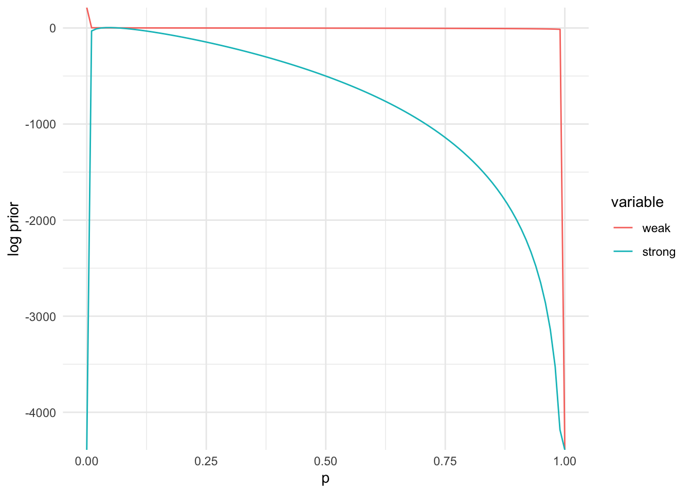
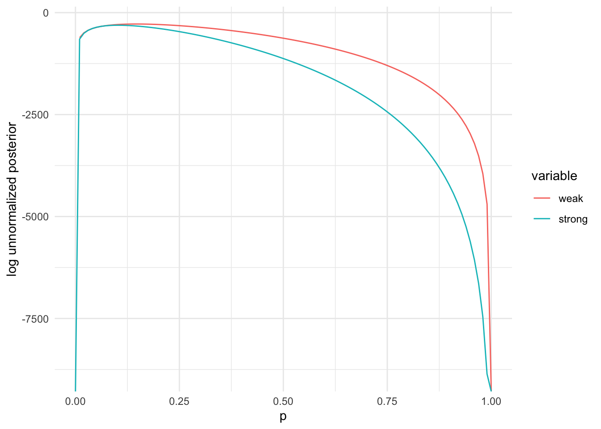
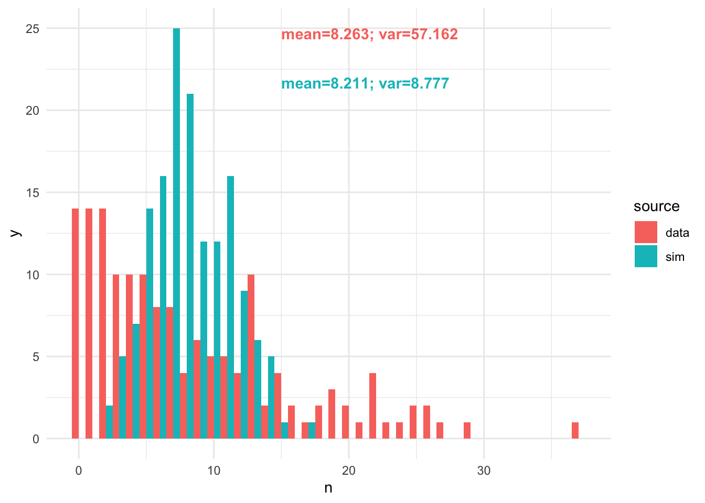
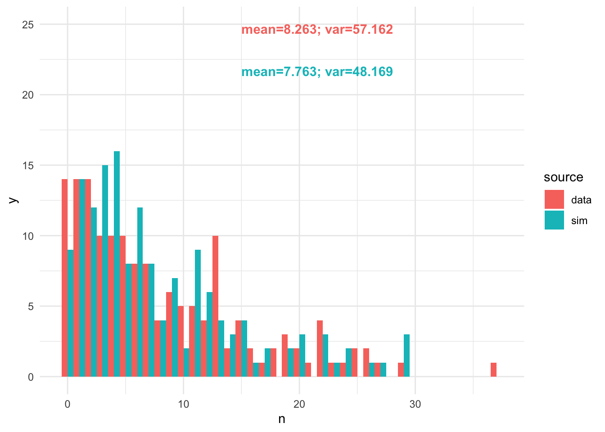

library(data.table)
## working directory should be: vu_advstats_students
tsuga = readRDS("data/tsuga.rds")
## if you don't have the repository saved locally
# tsuga = readRDS(url("https://github.com/ltalluto/vu_advstats_students/raw/main/data/tsuga.rds"))This dataset gives statistics about Tsuga canadensis
observed over multiple years in forest plots in eastern Canada. Included
are the number of trees born, the number observed to have
died that year, the total number of trees (including dead
ones) n, and the climate. Filter the dataset so that it
contains only observations from the year 2005 with at least 1 individual
(n > 0)
tsuga = tsuga[year == 2005 & n > 0]p: a single value, the probability that a
randomly chosen individual is deadn: a vector, the number of trees in each
plotk: a vetor, the number of dead trees in each
plot# n and k are vectors
lfun = function(p, n, k) {
## function body
return(sum(dbinom(k, n, p, log=TRUE))) ## a single value!
}p
lfun once
for each value of p. This is most efficiently accomplished
using sapply, but a for loop will also
work.p_plot = seq(0,1,length.out=100)
## sapply because p_plot is a vector, but lfun expects a single value
ll_plot = sapply(p_plot, lfun, n = tsuga$n, k = tsuga$died)
plot(p_plot, ll_plot, type='l', col='blue', lwd=2, xlab='p', ylab='log likelihood')optim to find the MLE for p# choosing a smaller initial value, because mortality is unlikely to be 50% and because the plot above demonstrates this
optim(0.1, lfun, method = "Brent", n = tsuga$n, k = tsuga$died, control = list(fnscale = -1), lower=0, upper=1)$par## [1] 0.147mean(dat$died/dat$n)? If
so, why?mean(tsuga$died/tsuga$n)## [1] 0.209Taking the mean of the probability in each plot forgets to account for the different sample sizes in each plot; a plot with 100 trees tells us a lot more about mortality probability than a plot with only one tree
lpr = function(p, a, b) dbeta(p, a, b, log=TRUE)
lpost = function(p, a, b, n, k) lfun(p, n, k) + lpr(p, a, b)
## we try two different priors, one weakly informative and one highly informative
## weak prior: we assume deaths are rarer than survival, but that lots of values are possible
a_weak = 0.5
b_weak = 4
## stronger prior, we use prior_mu from the dataset to be the average prior probability, and assume this is based on a prior
## sample of 1000 trees
a_strong = tsuga$prior_mu[1] * 1000
b_strong = 1000 - a_stronglibrary(ggplot2)
prior_dat = data.table(p = p_plot, weak = lpr(p_plot, a_weak, b_weak),
strong = lpr(p_plot, a_strong, b_strong))
prior_dat = melt(prior_dat, id = "p")
ggplot(prior_dat, aes(x=p, y=value, colour=variable)) + geom_line() +
ylab("log prior") + xlab("p") + theme_minimal()
posterior_dat = data.table(p = p_plot,
weak = sapply(p_plot, function(pr) lpost(pr, a_weak, b_weak, tsuga$n, tsuga$died)),
strong = sapply(p_plot, function(pr) lpost(pr, a_strong, b_strong, tsuga$n, tsuga$died)))
posterior_dat = melt(posterior_dat, id = "p")
ggplot(posterior_dat, aes(x=p, y=value, colour=variable)) + geom_line() +
ylab("log unnormalized posterior") + xlab("p") + theme_minimal()## Warning: Removed 1 row containing missing values or values outside the scale range
## (`geom_line()`).
optim.optim(0.1, lpost, method = "Brent", n = tsuga$n, k = tsuga$died, a=a_weak,
b=b_weak, control = list(fnscale = -1), lower=0, upper=1)$par## [1] 0.147optim(0.1, lpost, method = "Brent", n = tsuga$n, k = tsuga$died, a=a_strong,
b=b_strong, control = list(fnscale = -1), lower=0, upper=1)$par## [1] 0.103The MLE (using just the current dataset) was around 0.15. The MAP estimates were lower, depending on how strong the prior was, but still quite a bit higher than the prior_mu given in the dataset.
optimizing.You will need to create a new stan file, and then save it. This code assumes it is saved in “stan/tsuga_map.stan”, but this is not done for you automatically.
Note that in this code, we provide the prior hyperparameters as data; this allows you to change them easily without recompiling the model.
data {
int <lower = 0> n_obs;
int <lower = 0> n [n_obs]; // number of trees per plot
int <lower = 0> died [n_obs]; // number of dead trees per plot
real <lower = 0> a; // prior hyperparameter
real <lower = 0> b;
}
parameters {
real <lower = 0, upper = 1> p;
}
model {
died ~ binomial(n, p);
p ~ beta(a, b);
}Next you will need to compile the model
tsuga_map = stan_model("stan/tsuga_map.stan")Here we fit the strong prior from above. Feel free to experiment with
a and b to change this.
tsuga_stan = list(
n_obs = length(tsuga$died),
n = tsuga$n,
died = tsuga$died,
a = a_strong,
b = b_strong
)
optimizing(tsuga_map, data = tsuga_stan)$par## p
## 0.103Since these are count data and the numbers are relatively low, it seems like a Poisson process could be a good fit.
We already decided on a Poisson likelihood. Gamma priors go nicely with the Poisson because the lambda parameter of the Poisson must be positive. We don’t know much about this distribution, but we can guess that 1 is a likely value, 10 is also quite probable, 100 or 1000 possible, 1000000 very unlikely. The ratios of these likelihoods can help us calibrate prior hyperparameters.
## reload the data, this time we want the zeros
tsuga = readRDS("data/tsuga.rds")
tsuga = tsuga[year == 2005]data {
int <lower = 0> n_obs; // number of observations
int <lower = 0> n [n_obs]; // number of trees per plot
// prior hyperparameters
real <lower = 0> shape;
real <lower = 0> rate;
}
parameters {
real <lower = 0> lambda;
}
model {
n ~ poisson(lambda);
lambda ~ gamma(shape, rate);
}tsuga_mean = stan_model("stan/tsuga_mean.stan")# here we write the same functions in R that we do in stan above, just as an example.
# we will fit the model using stan though
llik = function(lambda, n) sum(dpois(n, lambda, log=TRUE))
lpr = function(lambda, shape = 1, rate = 1) dgamma(lambda, shape = shape, rate = rate, log=TRUE)
lpost = function(lambda, n, shape = 1, rate = 1) llik(lambda, n) + lpr(lambda, shape, rate)
shape = 1
rate = 1
lpr(1, shape, rate) - lpr(100, shape, rate)## [1] 99lpr(1, shape, rate) - lpr(1e6, shape, rate)## [1] 1e+06Under this prior, observing a rate of 1 tree per plot is 100x more likely than 1000 trees, but 1 million times more likely than 1 million trees. This is not strongly informative, but still injects some common sense.
tsuga_mean_dat = list(
n_obs = length(tsuga$n),
n = tsuga$n,
shape = shape,
rate = rate
)
map = optimizing(tsuga_mean, data = tsuga_mean_dat)$parmean(dat$n)?c(map = map, mean = mean(tsuga$n))## map.lambda mean
## 8.21 8.26r****() function
corresponding to the likelihood function to simulate a new dataset, with
as many observations as in the original data.samp = rpois(nrow(tsuga), map)hdat = rbind(data.table(n = samp, source="sim"), data.table(n=tsuga$n, source="data"))
# make some nice labels
lab1 = paste0("mean=", round(mean(hdat[source=='data', n]), 3), "; var=",
round(var(hdat[source=='data', n]), 3))
lab2 = paste0("mean=", round(mean(hdat[source=='sim', n]), 3), "; var=",
round(var(hdat[source=='sim', n]), 3))
ggplot(hdat, aes(x=n, fill=source)) +
geom_histogram(position="dodge", binwidth=1) + theme_minimal() +
annotate("text", x=15, y=25, label=lab1, colour="#F8766D", fontface=2, hjust=0, vjust=1) +
annotate("text", x=15, y=22, label=lab2, colour="#00BFC4", fontface=2, hjust=0, vjust=1)
The variance is much too low, so we should try a negative binomial likelihood.
data {
int <lower = 0> n_obs; // number of observations
int <lower = 0> n [n_obs]; // number of trees per plot
// prior hyperparameters
real <lower = 0> shape;
real <lower = 0> rate;
real <lower = 0> shape_phi;
real <lower = 0> rate_phi;
}
parameters {
real <lower = 0> mu;
real <lower = 0> phi; // we need a dispersion parameter for the negative binomial
}
model {
n ~ neg_binomial_2_log(log(mu), phi);
mu ~ gamma(shape, rate);
phi ~ gamma(shape_phi, rate_phi);
}tsuga_nb = stan_model("stan/tsuga_nb.stan")tsuga_mean_dat$shape_phi = 0.1 # VERY weak priors for phi
tsuga_mean_dat$rate_phi = 0.1
map_nb = optimizing(tsuga_nb, data = tsuga_mean_dat)$parsamp_nb = rnbinom(nrow(tsuga), size=map_nb['phi'], mu=map_nb['mu'])
hdat_nb = rbind(data.table(n = samp_nb, source="sim"), data.table(n=tsuga$n, source="data"))
# make some nice labels
lab1 = paste0("mean=", round(mean(hdat_nb[source=='data', n]), 3), "; var=",
round(var(hdat_nb[source=='data', n]), 3))
lab2 = paste0("mean=", round(mean(hdat_nb[source=='sim', n]), 3), "; var=",
round(var(hdat_nb[source=='sim', n]), 3))
ggplot(hdat_nb, aes(x=n, fill=source)) +
geom_histogram(position="dodge", binwidth=1) + theme_minimal() +
annotate("text", x=15, y=25, label=lab1, colour="#F8766D", fontface=2, hjust=0, vjust=1) +
annotate("text", x=15, y=22, label=lab2, colour="#00BFC4", fontface=2, hjust=0, vjust=1)